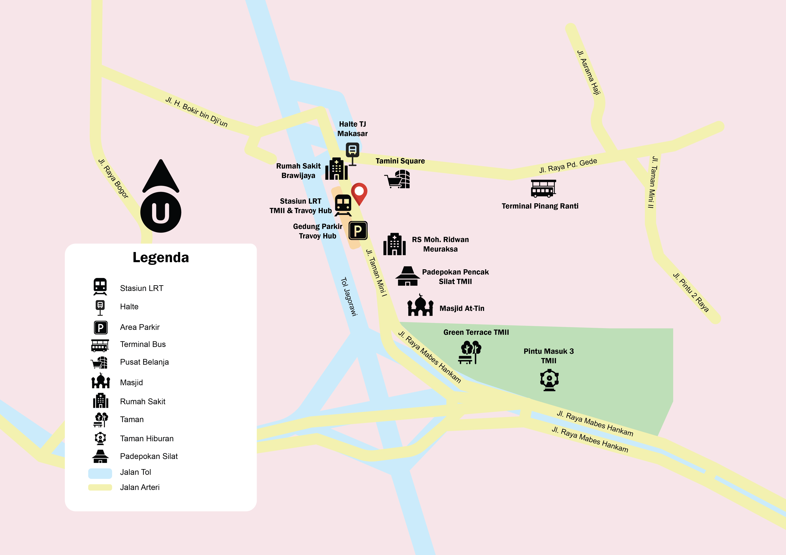

Professional Project
FREELANCE - GIS SPECIALIST SERVICE
May - Present 2026

Denah Lokasi Stasiun LRT TMII

Peta Rawan Longsor Kabupaten Kolaka Timur Tahun 2024

Peta Tutupan Lahan Kawasan DAS Cidanau Tahun 2025

Peta Persebaran Hutan Bakau (Mangrove), Desa Ujungalang, Kab. Cilacap Tahun 2026

Peta Lokasi Penelitian Stasiun Pasang Surut

Peta Pewadahan Komunal Kelurahan Balang Beru, Kecamatan Binami, Kabupaten Jeneponto

Peta Klasifikasi Patch Habitat 8 Individu Kukang Jawa, Desa Cipaganti, Kabupaten Garut

Peta Tematik Rawan Banjir Kota Surabaya

Peta Rawan Longsor Kabupaten Kolaka Timur Tahun 2022

Peta Rawan Longsor Kabupaten Kolaka Timur Tahun 2023

Peta Bahaya Gunungapi Sindoro dan Sumbing (Hipotetik)

Peta Zona Lontaran Gunungapi

Peta Zona Landasan Gunungapi

Peta Persebaran Cagar Budaya Kecamatan Kotagede, Daerah Istimewa Yogyakarta

Peta Lokasi Pasar Bunga Rawa Belong, DKI Jakarta

Land Surface Temperature (LST) Taman Puputan Badung/p>

Peta Persebaran Hutan Bakau (Mangrove), Desa Labuhan Bakti, Kab. Simeulue, Provinsi Aceh Tahun 2026

Peta Persebaran Titik Sampel Nitrat-Nitrit Air Sumur Desa Cikole, Kecamatan Lembang

Peta Wilayah Kecamatan Kotagede, Daerah Istimewa Yogyakarta

Peta Riwayat Penyakit PES Kecamatan Tembalang Tahun 2025

Peta Risiko PES Kecamatan Tembalang Tahun 2025

Peta Topografi Provinsi Aceh Tahun 2025

Peta Klasifikasi Tingkat Paparan NO2, Kabupaten Karawang Tahun 2025

Peta Zona Rawan Banjir Kabupaten Aceh Tamiang